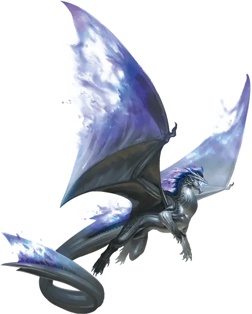

Вызов дракона
Summon Dragon
5 уровень, Призыв

Время сотворения Действие
Дистанция 60 футов
Компоненты В, С, М (объект с выгравированным на нём драконом стоимостью не менее 500 ЗМ)
Длительность Концентрация, вплоть до 1 часа
Классы Волшебник
Подклассы Драконье чародейство (Чародей)
Вы призываете духа Дракона. Он появляется в видимом вами в пределах дистанции незанятом пространстве и использует блок статистики Духа дракона. Существо исчезает, когда его Хиты опускаются до 0 или когда заклинание заканчивается.
Это существо — союзник вам и вашим союзникам. В бою оно имеет то же значение Инициативы, что и вы, и ходит сразу после вас. Оно подчиняется вашим словесным командам (от вас действий не требуется). Если вы ничего не приказываете, оно применяет действие Уклонение и перемещается так, чтобы избегать опасности.
Используя ячейку заклинания большего уровня. Там, где блок статистики ссылается на уровень заклинания, используйте уровень ячейки заклинаний.